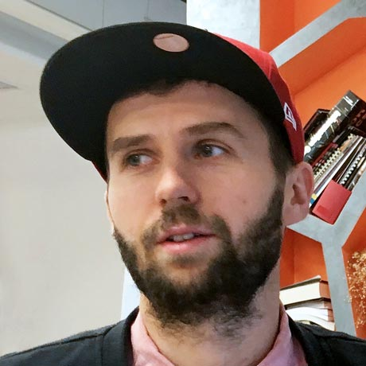
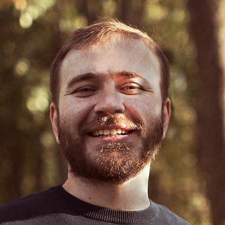
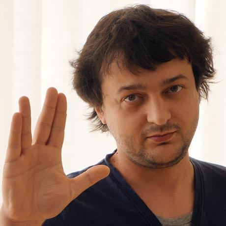

Веб-разработчик, консультант, работает в компании Codegyre, разрабатывает PHP-фреймворк для функционального тестирования Codeception и портирует его на Node.js. Также пишет на JavaScript, Ember.js, Ruby on Rails, увлекается туризмом и немного психологией.
Веб-евангелист в Opera, основатель сообщества «Веб-стандарты», автор движка для презентаций Shower, разработчик, организатор и участник IT-конференций, автор блога Пепелсбей.net, пропагандист веб-стандартов.
 Разработчик редактора и браузерного расширения Grammarly, которыми каждый день пользуются 3 млн людей. В прошлом проводил успешные курсы по JavaScript, был сооснователем дизайн-студии, в составе которой переделал DOU.ua, личный сайт kigorw.com.
Активный участник JavaScript-сообщества Украины, последние 8 лет разрабатывает большие веб-приложения. Один из сооснователей самого крупного чат-сообщества dev-ua для разработчиков в Восточной Европе, член рабочей группы локализации Node.js для украинского языка, соорганизатор KyivJS, один из участников некоммерческого образовательного IT-движения Kottans.
Независимый фронтенд-разработчик на протяжении 15 лет. Создатель и редактор журнала «Frontender Magazine». Представитель «Веб-стандартов» в Украине. Докладчик на международных и локальных конференций, эксперт на чемпионате UA Web Challenge.
Фронтенд-разработчик в компании «НГС» из Новосибирска. Любит красивый дизайн и рок-музыку. В тайне от всех пишет стихи и рассказы, выступает и записывает песни под псевдонимом «RayProud».
 Старший фронтенд-разработчик в MovedIn. Начинал как верстальщик в середине 2000-х, потом переучился во фронтендера в Яндексе и провёл там три года. Сейчас стартапит в английской компании, в свободное время пишет плагины для Atom и руководит спортивным клубом.
 Фронтенд-разработчик, 8 лет занимался фронтендом в симферопольском офисе Яндекса и принимал участие в верстке практически каждого проекта. В конце 2011 года создал в Симферополе группу фронтенд-разработки внутренних сервисов, которая решают практически все задачи интранет-сервисов в Яндексе. В 2015 году переехал в Киев и сотрудничает с различными компаниями, недавно присоединился к разработке чата ChatGrape, участвует в разработке новой версии Современного учебника JavaScript.